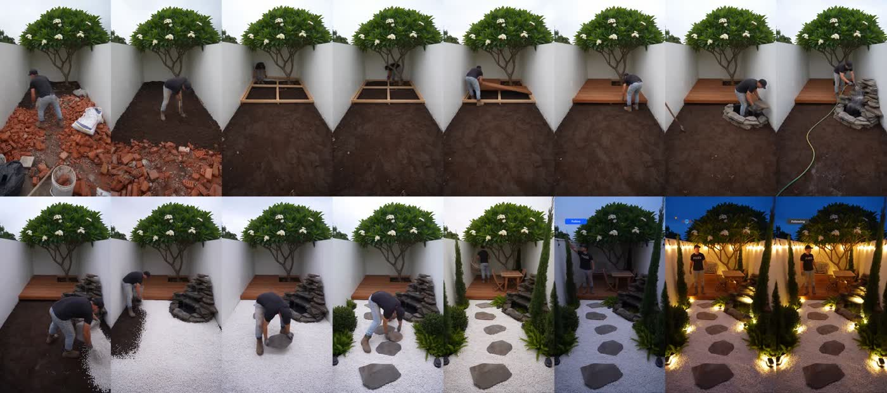
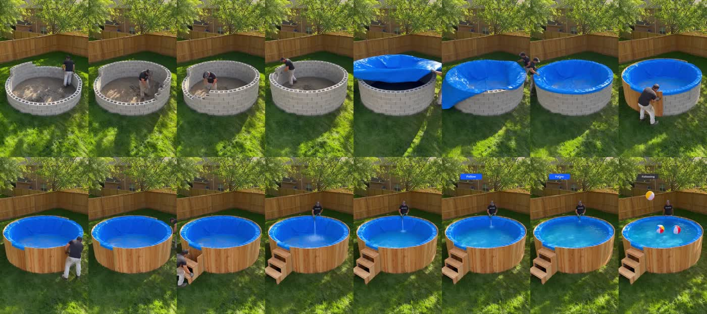
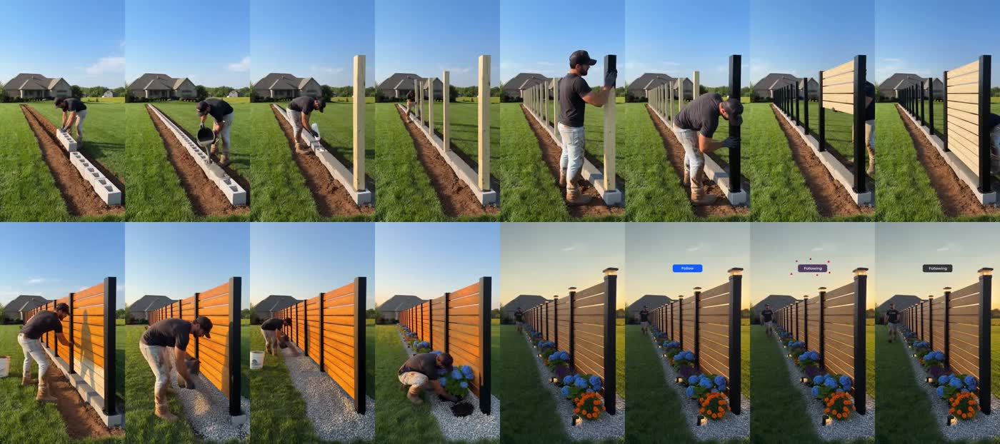
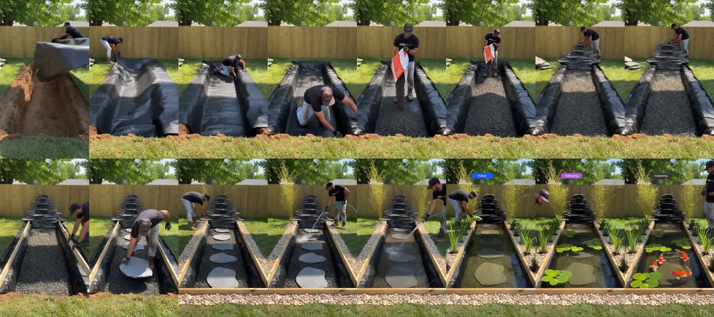
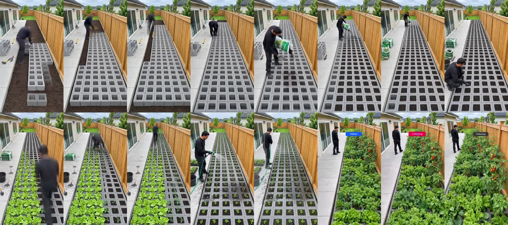
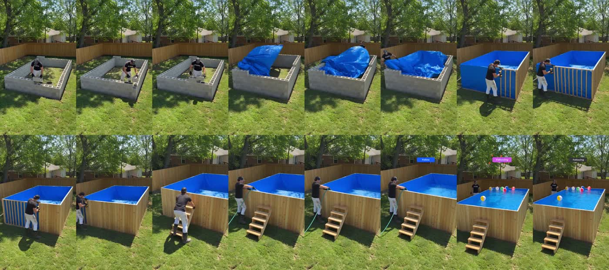
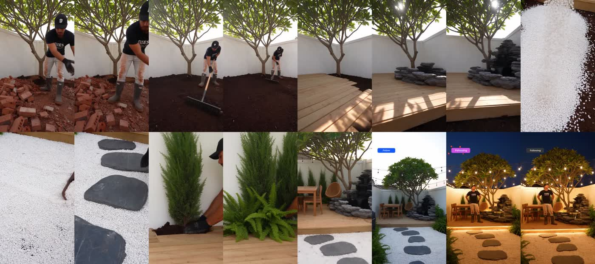
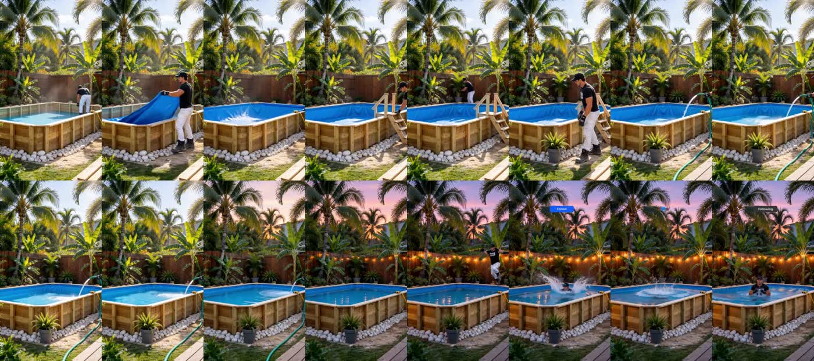
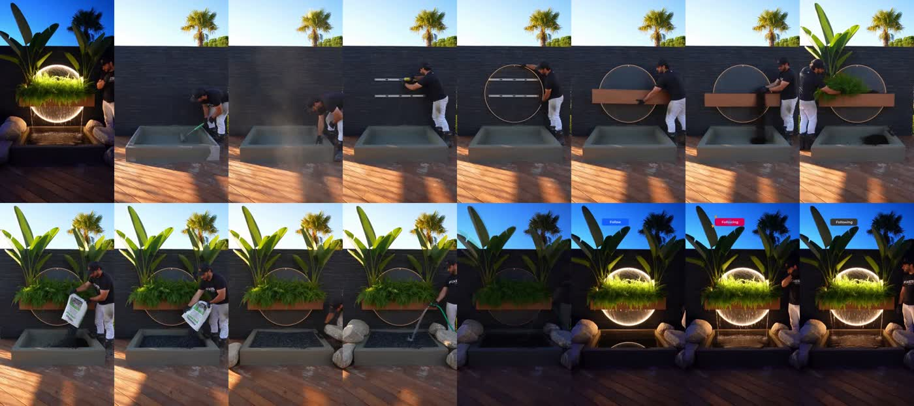
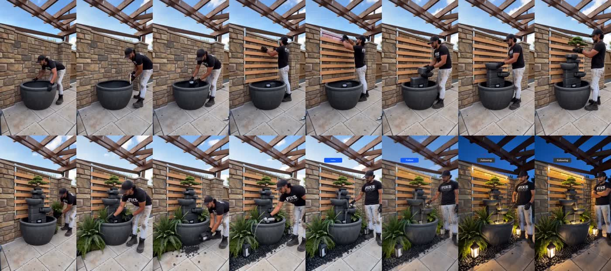

Pages: Every reel — date, link, time, views, likes, comments · Our 150 prompts · Test #1 video
Facebook page FeraFixes (72.9k followers). All 88 reels downloaded and watched (16 frames each + audio). Reels posted 25 Sep → 1 Nov 2026. View counts read 23 Nov 2026 from each reel's own page.
| What | Reels | Median views | Passed 100k |
|---|---|---|---|
| Built from CINDER BLOCKS | 35 | 277k | 27 of 35 (77%) |
| Anything else | 53 | 11k | 10 of 53 (19%) |
| Pools | 28 | 182k | 15 of 28 |
| Fences | 19 | 177k | 14 of 19 |
| Ponds / waterfalls / fountains | 13 | 8.7k | 3 of 13 |
| Garden beds / paths (no blocks) | 17 | 11k | 4 of 17 |
| Decks, pergolas, sheds, container house | 5 | 18k | 0 of 5 |
| Concrete crafts / BBQs (moulds, bottles) | 5 | 16k | 1 of 5 |
| Tyre / bottle / boat / pallet / sandbag gimmicks | 14 | 18k | 3 of 14 |
| ONE continuous shot, no cuts | 38 | 169k | 22 of 38 |
| 3 or more cuts | 17 | 8.5k | 4 of 17 |
| US suburban fenced yard | 44 | 170k | 23 of 44 |
| Tropical / palms | 11 | 10k | 3 of 11 |
| Starts on a plain green lawn | 37 | 177k | 22 of 37 |
| Ends: he stands and looks at it | 60 | 60k | 28 of 60 |
| Ends: jumps / swims in the pool | 10 | 11k | 2 of 10 |
| Night/lights-on ending | 33 | 11k | 9 of 33 — not what drives views |
| Woman in the same outfit | 11 | 9k | 3 of 11 (mostly on pond/garden reels, so not proven) |
The look of every reel: one camera, locked high and wide (like from a roof), whole build in ~14 s as one sped-up take: lawn → blocks rise course by course → liner/cladding → finished. Same branded outfit every time: black cap, black tee printed "FIXES GROUP", white paint-spattered work trousers, gloves, boots — the outfit is the persona, the face changes (moustache, ginger, bearded, 5 women). No voice in any reel. Last 2 s of every reel: an animated blue "Follow → Following" button pops on screen. Captions: Built a Modern Concrete Block & Wood Slatted Fence from Scratch! 😱🪵 #diyfence #yardtransformation.
How they run it: when one hits, they post 5–10 near-copies. Pools late Sep (904k, 866k, 315k…) → fences 7–14 Oct (1.3M, 710k, 457k, 508k…) → block vegetable-garden grid 30 Oct–1 Nov (941k, 735k). When they drifted into ponds, sheds and gimmick builds (15–29 Oct) views fell to 5–20k; the block garden grid brought them back.
Visible AI mistakes they get away with: same man twice in one frame (15 reels — and those still did well), logo misspelt ("FIXS", "SeraFixes"), plants and furniture popping in fully formed. Viewers don't punish it.










Rules for every video: cinder blocks in the build · US suburban back yard with a wooden fence, green lawn at the start · ONE locked high-wide shot, no cuts, 13–15 s · our persona in the SAME branded outfit every time · ends with the persona standing, looking at the finished build · animated Follow button in the last 2 s · caption "Built a … from Scratch! 😱" + 3–5 hashtags · 2–3 posts a day per page.
Phase 1 — videos 1–30: the proven builds, our own versions (different yard, shape, colours and details every time — never their exact build)
| # | Series | Build |
|---|---|---|
| 1 | Pool | Round cinder-block above-ground pool, blue liner, cedar cladding, 3-step wooden stairs |
| 2 | Pool | Rectangular cinder-block pool, grey rendered walls, wood deck along one side |
| 3 | Pool | Heart-shaped cinder-block pool, white render, pink-flower border |
| 4 | Pool | Oval cinder-block pool with dark-stained horizontal slat cladding |
| 5 | Pool | Square cinder-block plunge pool with built-in block bench seat |
| 6 | Pool | L-shaped cinder-block pool hugging the fence corner |
| 7 | Pool | Two-tier cinder-block pool: small hot-tub box spilling into the big pool |
| 8 | Pool | Round cinder-block pool painted black, cedar top rim, solar lights on rim |
| 9 | Pool | Long lap-pool of cinder blocks down the side of the yard |
| 10 | Pool | Cinder-block pool sunk half into a slope, deck on the low side |
| 11 | Pool | Kids' shallow cinder-block splash pool with slide off the block wall |
| 12 | Pool | Octagon cinder-block pool with grey wood cladding and corner planters |
| 13 | Fence | Cinder-block footing + black-rendered pillars + horizontal cedar slats + solar caps |
| 14 | Fence | Post-and-rail ranch fence on block bases, green-painted posts |
| 15 | Fence | White-rendered block pillars, dark walnut slats, white gravel strip + lavender |
| 16 | Fence | Corner-lot privacy fence, block pillars, vertical slats, globe post lights |
| 17 | Fence | Front-yard low fence: block pillars, picket infill, flower bed in front |
| 18 | Fence | Curved block-and-slat fence following a round lawn |
| 19 | Fence | Block fence with built-in planter boxes every 2 metres |
| 20 | Fence | Grey block pillars + slatted gate in the middle that swings open at the end |
| 21 | Fence | Tall block privacy wall with wood slat panels and climbing roses |
| 22 | Fence | Block-and-cedar fence along a sidewalk, mulch bed and shrubs in front |
| 23 | Garden grid | Cinder-block grid vegetable garden down a side yard, lettuce + tomatoes |
| 24 | Garden grid | Cinder-block raised beds in a U-shape with gravel paths between |
| 25 | Garden grid | Cinder-block herb spiral tower in the middle of the lawn |
| 26 | Garden grid | Cinder-block strawberry wall: blocks stacked on their side, plants in every hole |
| 27 | Garden grid | Cinder-block raised bed border round the patio with flowers in every cell |
| 28 | Courtyard | Walled courtyard: brick rubble → deck round a flowering tree, gravel, stepping stones |
| 29 | Courtyard | Narrow side passage: rubble → white gravel, block planters, cypress row |
| 30 | Courtyard | Small back yard: rubble → square deck, block bench, potted olive tree |
Phase 2 — videos 31–90: 30 new cinder-block builds they haven't done, 2 versions each (same rules; if both versions of a build stay under 20k, that build is dropped)
| # | Build (×2) |
|---|---|
| 31–32 | Cinder-block outdoor kitchen island with wood countertop |
| 33–34 | Cinder-block fire-pit ring with built-in block bench circle |
| 35–36 | Cinder-block hot-tub surround with cedar steps |
| 37–38 | Cinder-block BBQ smoker / pizza oven tower |
| 39–40 | Cinder-block bar counter with stools on the patio |
| 41–42 | Cinder-block terrace steps up a sloped lawn |
| 43–44 | Cinder-block retaining wall turning a slope into two flat lawns |
| 45–46 | Cinder-block front porch steps with wood treads |
| 47–48 | Cinder-block garden bench with wooden seat slats |
| 49–50 | Cinder-block corner couch with outdoor cushions |
| 51–52 | Cinder-block shed base + timber shed |
| 53–54 | Cinder-block greenhouse base wall + clear panels |
| 55–56 | Cinder-block chicken coop base |
| 57–58 | Cinder-block dog house / kennel with run |
| 59–60 | Cinder-block driveway gate pillars + wooden gate |
| 61–62 | Cinder-block mailbox pillar with house number |
| 63–64 | Cinder-block reflecting pool / koi trough (long + rectangular) |
| 65–66 | Cinder-block sandpit + play area for kids |
| 67–68 | Cinder-block outdoor shower wall with wood slats |
| 69–70 | Cinder-block pergola footings + timber pergola |
| 71–72 | Cinder-block privacy screen around a hot tub |
| 73–74 | Cinder-block compost bays (3 bins) |
| 75–76 | Cinder-block water-trough garden pond with fountain spout |
| 77–78 | Cinder-block tiered flower wall along the house |
| 79–80 | Cinder-block firewood store with roof |
| 81–82 | Cinder-block patio slab border + pavers |
| 83–84 | Cinder-block sunken fire lounge dug into the lawn |
| 85–86 | Cinder-block cornhole / games court edge |
| 87–88 | Cinder-block sandbox-to-planter conversion |
| 89–90 | Cinder-block tiered pool deck with sun loungers |
Phase 3 — videos 91–150: double down. Every one of our videos that passes 100k gets 3 new versions (other yard, other shape, other colour), the way FeraFixes ran pools → fences → garden grid. Builds that stay under 20k twice are never repeated. Nothing in Phase 3 is written until Phase 1–2 numbers are in.
Do NOT make: ponds/waterfalls/fountains, sheds/container houses/root cellars, concrete crafts (bottle tables, watermelon moulds), tyre/bottle/pallet gimmicks, tropical yards, multi-cut edits, 20 s+ videos, pool-jump endings.